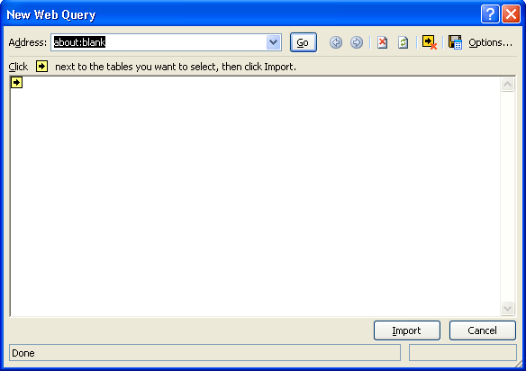
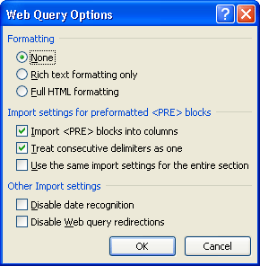
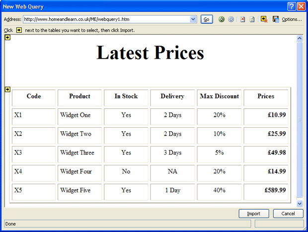
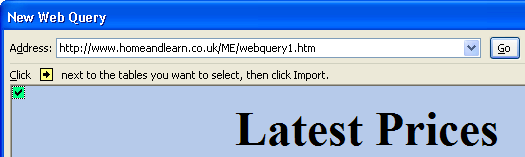
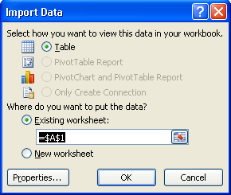
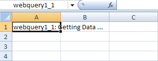
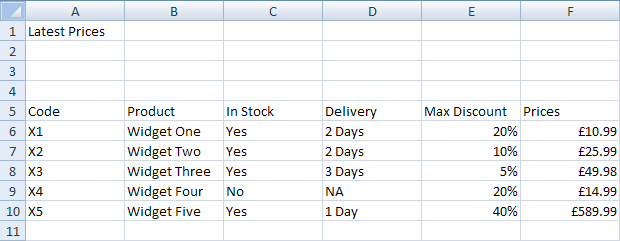
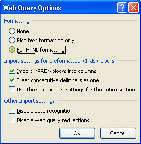
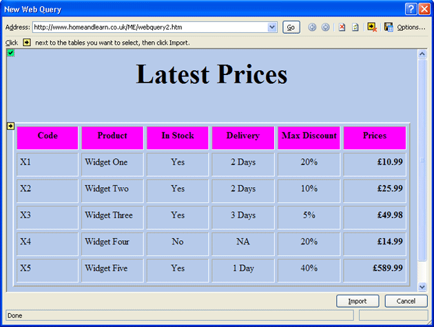
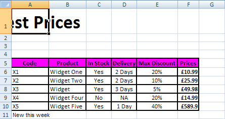

Free
computer Tutorials
|
Free
computer Tutorials
|
|
 HOME HOME
|
|
||||
Microsoft Excel 2007 to 2010Web IntegrationA Web Query is when you send a request to a web page and ask for some data to be returned. You'll see how to do that in this section, by importing data into your spreadsheet from a web page on our web site. There are many reasons why you would want to do that. If, for example, you're a hard-working sales person out in the field, and a customer wants the latest prices, you could run a web query in Excel and pull the prices from your employer's website.
How to run a Web Query in Excel 2007/2010You'll now learn how to use Web Queries in Excel. For this lesson, you'll need an active internet connection. We're going to connect to a web page, and download a product list straight into a spreadsheet. Off we go!
From the Get External Data panel, click on From Web. You'll then see the following dialogue box appear:  The idea is that you type the address of a web page and then click Go. Excel will then fetch the data for you. So, in the Address box, where it says about:blank in the image, type the following address: http://www.homeandlearn.co.uk/ME/webquery1.htm Before you click Go, click the Options button in the top right of the
New Web Query dialogue box. You'll see this dialogue box appear:  For this first web query, we're not going to change any of these settings. But the Formatting section is the one you'll use most. You can import the web page with all its current formatting, use just Rich Text formatting, or have no formatting at all. (Rich Text formatting will get you things like bold text, but won't give you any of the fancy stuff on the page.) Click OK on the Options dialogue box to return to the New Web Query. Now click the Go button. When you click the Go button, Excel will try to connect to the address you gave it. If it can't get through, you'll see a "Page Cannot be Found" error page: If that's what you're getting, make sure you are connected to the internet. Check if you've typed the address correctly. Make sure that your firewall is not blocking Excel. If Excel is successful, you'll see the data appear in the Web Query
window:  Note the black arrows in the yellow squares. You can select the tables you want to import. Click the first yellow box, and it will turn green and have a tick in it. Like this one:  Once you have the data selected, click the Import button at the bottom of the New Web Query window. You'll get yet another dialogue box:  There's not much to do, here. But if you want to import the data to a different starting cell, or even a new worksheet, select the appropriate option. For this particular import, Excel is only giving us the option to view the data as a Table. Click OK and the import will begin. You should see this in cell A1 on your spreadsheet:  If the import is successful, your spreadsheet should look like ours below:  As you can see, the data from our web page has been imported into Excel! Let's try another one.
Web Query TwoThe next web query we'll do will see an import of full HTML formatting. When you're finished, you'll see why this can be a problem.
http://www.homeandlearn.co.uk/ME/webquery2.htm
Click the Options button in the top right of the dialogue box:  This time, select Full HTML Formatting, as in the image above. Click OK, then click the Go button. Excel will bring back your data. Click the yellow box with the arrow in it to select all the data:  Click the Import button at the bottom when your dialogue box looks like the one above. When you see the Import Data dialogue box, just click OK. The data will then be imported into Excel:  The problem with importing full HTML is that some of that fancy formatting you did won't convert very well in Excel. In the image above, our Latest Prices heading has been mangled! In other words, you may have to spend time re-formatting your spreadsheet. To get the full heading back, for example, highlight the first row, from A1 to G1. Click on the Home menu, and then locate the Alignment panel. Click Merge and Centre.
But that's it for Web Queries. They are quite simple to do, and can
come in handy if you're out on the road. In the next part, we'll take
a look at Hyperlinks in Excel. |
|||||
|